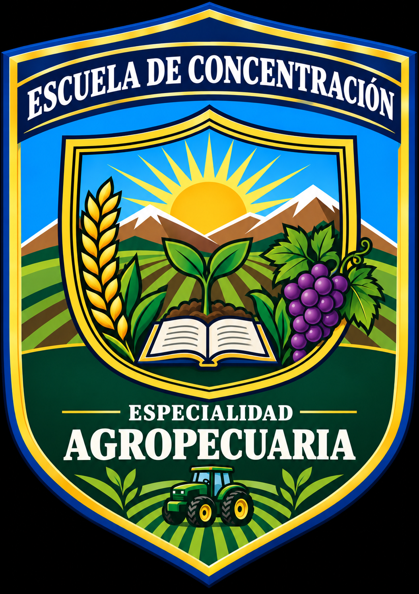
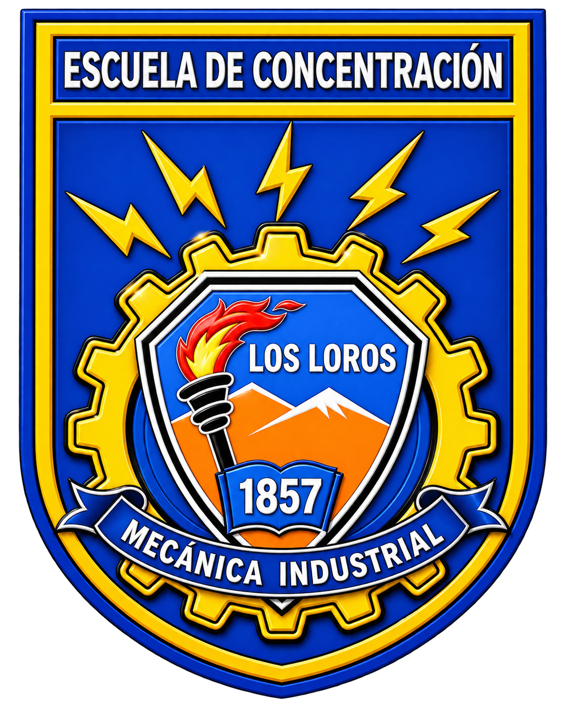
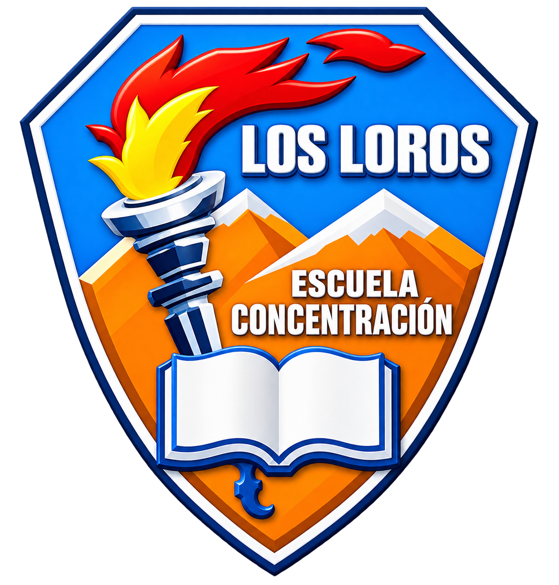
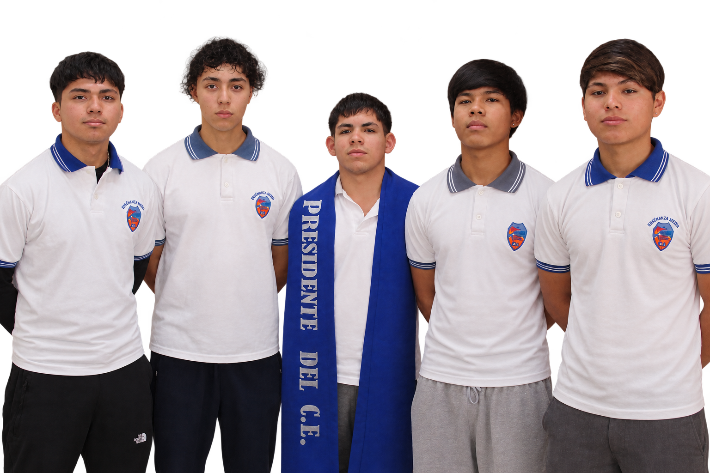

Creación de la Escuela
Comienza la historia educativa del establecimiento en Los Loros.

Educación desde NT1 hasta Formación Técnico Profesional
Excelencia Académica 2026-2027


Una comunidad educativa comprometida con el aprendizaje, la inclusión y el desarrollo del territorio.
Información reciente de nuestra comunidad educativa.
Cargando últimas noticias...
Presiona el afiche para verlo en tamaño ampliado.
Buscando el comunicado más reciente del establecimiento.
Ponemos a disposición de nuestra comunidad educativa la Cuenta Pública del establecimiento.
Puede leer el documento directamente en esta página o abrirlo completo en una pestaña independiente.
Presione el botón para visualizar la Cuenta Pública.
Ponemos a disposición de madres, padres y apoderados los accesos directos a los sistemas oficiales utilizados para realizar procesos de postulación, matrícula y continuidad de estudiantes.
Seleccione la opción que corresponda al proceso que necesita realizar.
Utilice este sistema para conocer y participar en los procesos de admisión escolar correspondientes a establecimientos educacionales.
Ingresar al Sistema de Admisión EscolarAcceso directo al sistema de registro para apoderados que necesitan solicitar una vacante o realizar el proceso correspondiente.
Ingresar a Anótate en la ListaImportante: Estos accesos corresponden a plataformas externas oficiales. La Escuela de Concentración Los Loros no administra directamente dichos sistemas.
Información importante para nuestra comunidad educativa.
Cargando el último comunicado disponible...
📄 Ver último comunicadoRevisa los comunicados publicados anteriormente.
Cargando comunicados disponibles...
Conoce nuestra identidad, trayectoria y propósito educativo.
La Escuela de Concentración de Los Loros comenzó a funcionar en el año 1857, formando parte de la historia educacional de la localidad y del desarrollo de la educación pública en nuestro país.
Actualmente es un establecimiento educacional de dependencia del Servicio Local de Educación Pública de Atacama, que atiende los niveles de Educación Parvularia, Educación Básica y Educación Media Técnico Profesional.
El establecimiento cuenta con las especialidades de Técnico en Agropecuaria con mención Agrícola y Técnico en Mecánica Industrial, además de una tercera jornada destinada a personas adultas que buscan completar su proceso de educación formal.
La escuela también cuenta con Proyecto de Integración Escolar, apoyando de manera sistemática a estudiantes con necesidades educativas especiales y promoviendo una educación inclusiva.
Ser una comunidad educativa inclusiva, segura y con identidad territorial, que reconozca la diversidad como una fortaleza y cultive el buen trato como base esencial para una sana convivencia, proyectándose como un espacio formativo que garantiza trayectorias educativas de calidad, desde el nivel NT1 hasta la formación técnico-profesional, formando personas íntegras, conscientes de su aporte a la sociedad, preparadas para enfrentar desafíos del mundo laboral o de la educación superior.
Brindar una educación inclusiva, segura y de calidad que acompañe las trayectorias educativas de los estudiantes desde el nivel NT1 hasta la formación técnico profesional, promoviendo el buen trato, el respeto mutuo y la equidad como pilares de la formación integral.
A través de un proyecto educativo centrado en el desarrollo de aprendizajes significativos y competencias para la vida, fomentamos la autonomía, la responsabilidad y el compromiso social, favoreciendo tanto la continuidad de estudios en la educación superior como la inserción en el mundo laboral.
Asimismo, fortalecemos la vinculación con la comunidad y con los espacios productivos del territorio, contribuyendo al desarrollo local y al bienestar colectivo.
Una trayectoria educativa que acompaña a la comunidad de Los Loros desde 1857.
Comienza la historia educativa del establecimiento en Los Loros.
Recibe esta denominación, que mantiene hasta el 30 de junio de 1978.
Se aplican planes y programas especiales orientados a la formación en oficios.
Se incorpora el régimen de Jornada Escolar Completa.
El establecimiento obtiene desempeño destacado en el sistema de evaluación.
Se renueva el Reconocimiento Oficial y se amplía la enseñanza a Educación Media Diurna y Nocturna.
Egresa la primera promoción de Enseñanza Media Técnico Profesional de la mención Agrícola.
Se firma el Convenio de Igualdad de Oportunidades y Excelencia Educativa.
Se aprueban los Planes de Mejoramiento Educativo del establecimiento.
Se reformula el Proyecto Educativo Institucional y se proyecta una nueva especialidad de Mecánica Industrial.
Se implementa la formación en Mecánica Industrial y se amplía la Tercera Jornada para población adulta.
El establecimiento obtiene Excelencia Académica.
Entra en funcionamiento Opción 4 Laboral, ampliando la propuesta educativa inclusiva del establecimiento.
Información sobre nuestros niveles y especialidades.
NT1: Pre Kinder
NT2: Kinder
1° a 8° Básico
1° a 4° Medio Técnico Profesional
Estudiantes que participan de esta modalidad educativa dentro de nuestra comunidad escolar.
Modalidad orientada al desarrollo de habilidades y competencias para la vida y el ámbito laboral.
Selecciona el curso o modalidad para visualizar su horario.
Espacios de aprendizaje, participación y desarrollo de habilidades para nuestros estudiantes.
Los Talleres JEC constituyen espacios formativos que buscan fortalecer los intereses, habilidades y talentos de nuestros estudiantes mediante experiencias prácticas, creativas y vinculadas con el entorno.
Los talleres se desarrollan los días miércoles y jueves, en horario de 13:55 a 15:30 horas.

Profesor: Cristian Cabrera
Horario: Miércoles y jueves de 13:55 a 15:30 horas

Profesor: Ignacio Cortés
Horario: Miércoles y jueves de 13:55 a 15:30 horas

Profesor: Cristian Zúñiga
Horario: Miércoles y jueves de 13:55 a 15:30 horas

Profesor: Leonardo Silva
Horario: Miércoles y jueves de 13:55 a 15:30 horas

Profesora: Susana Mancilla
Horario: Miércoles y jueves de 13:55 a 15:30 horas

Profesor: Simón Varela
Horario: Miércoles y jueves de 13:55 a 15:30 horas
Días: Miércoles y jueves
Horario: 13:55 a 15:30 horas
Los talleres se desarrollan durante la Jornada Escolar Completa (JEC), ofreciendo a nuestros estudiantes distintas alternativas de participación y aprendizaje.
Una oportunidad para continuar y completar tu trayectoria educativa.
Si necesitas completar o regularizar tus estudios de Enseñanza Básica o Enseñanza Media, te invitamos a informarte sobre las alternativas disponibles para continuar tu trayectoria educativa.
Nuestro establecimiento busca brindar oportunidades educativas que permitan a jóvenes y adultos avanzar en su formación y alcanzar nuevas metas personales, académicas y laborales.
Información y orientación para quienes necesitan completar o validar sus estudios de Enseñanza Básica.
Alternativas para completar o validar estudios de Enseñanza Media y continuar avanzando en la trayectoria educativa.
Acércate a nuestro establecimiento para conocer los requisitos, fechas y alternativas disponibles.
Para conocer los requisitos, documentación necesaria, fechas y proceso de inscripción, comunícate directamente con nuestro establecimiento.
Teléfono: +56 52 255 5354
Contactar al establecimientoSelecciona tu perfil para acceder rápidamente a la información y recursos de mayor interés para cada integrante de nuestra comunidad.
Accesos rápidos a información académica, actividades, comunicaciones y participación estudiantil.
Información y accesos útiles para madres, padres y apoderados de nuestro establecimiento.
Accesos a documentación institucional, protocolos y equipos responsables de la gestión del establecimiento.
Conoce quiénes forman parte de la Escuela de Concentración Los Loros y sus espacios de participación.
Son el centro de nuestra comunidad educativa y protagonistas de sus propios procesos de aprendizaje y desarrollo.
Profesionales que acompañan y orientan los procesos de aprendizaje y formación integral de nuestros estudiantes.
Lidera y orienta el trabajo institucional, promoviendo el cumplimiento de nuestro proyecto educativo.
Contribuyen diariamente al funcionamiento del establecimiento y al bienestar de toda la comunidad educativa.
Participan y colaboran en el proceso educativo de los estudiantes, fortaleciendo el vínculo entre familia y escuela.
Apoyan el desarrollo integral de los estudiantes y contribuyen a responder a sus diversas necesidades.
El Centro de Alumnos constituye un importante espacio de participación y representación estudiantil dentro de nuestra comunidad educativa.

El Centro de Alumnos está conformado por los siguientes estudiantes:
Alejandro Zenteno Castellanos
Miguel Alucema Carrizo
Yoel Domínguez Muiba
Javier Carrizo Latorre
Anthony Alcorta Ramírez
Espacio de participación de las familias que contribuye al fortalecimiento de la relación entre el establecimiento, los estudiantes y sus familias.
Información de la directiva: Próximamente.
Nuestra comunidad promueve el buen trato, el respeto mutuo, la inclusión y la equidad como elementos fundamentales para una convivencia educativa saludable.
Buscamos que cada integrante tenga espacios para participar, aportar y sentirse parte de la Escuela de Concentración Los Loros.
Equipo responsable del liderazgo y gestión del establecimiento.
Directora (S)
Jefa de UTP
Inspector General
Encargada de Convivencia Educativa
Espacio de participación y trabajo colaborativo de los distintos estamentos que forman parte de nuestra comunidad educativa.
El Equipo de Gestión es un espacio de participación, coordinación y trabajo colaborativo que reúne a representantes de los distintos estamentos de la comunidad educativa.
Su propósito es favorecer la participación de los diferentes actores de la comunidad escolar, promoviendo el diálogo, la colaboración y la construcción conjunta de iniciativas que contribuyan al mejoramiento de la vida escolar.
Aportan desde su experiencia pedagógica y profesional, contribuyendo al análisis de las necesidades educativas y al desarrollo de acciones que favorezcan los aprendizajes y la formación integral de los estudiantes.
Representan la voz de las familias y contribuyen con sus opiniones, propuestas y experiencias al fortalecimiento de la relación entre la familia y el establecimiento.
Participan aportando sus opiniones, necesidades e iniciativas, fortaleciendo la representación estudiantil y su participación activa en la comunidad educativa.
Aportan desde sus diferentes funciones y experiencias, contribuyendo al funcionamiento institucional, la convivencia y el bienestar de los integrantes de la comunidad educativa.
Contribuye desde una perspectiva inclusiva al desarrollo de estrategias y acciones que favorezcan la participación, el aprendizaje y el bienestar de los estudiantes.
Representa y canaliza las inquietudes, propuestas y necesidades de los integrantes del estamento correspondiente, favoreciendo la comunicación y participación organizada.
Servicio Local de Educación Pública de Atacama, en su calidad de empleador y sostenedor del establecimiento, participa desde su rol institucional y de apoyo a la gestión educativa.
El trabajo del Equipo de Gestión busca fortalecer la comunicación y colaboración entre los distintos actores de la comunidad educativa, reconociendo que cada estamento tiene un rol importante en la construcción de una escuela inclusiva, participativa y comprometida con su territorio.
La participación de sus integrantes permite recoger diferentes perspectivas y contribuir al desarrollo de acciones orientadas al mejoramiento de los procesos educativos, la convivencia y el bienestar de toda la comunidad escolar.
Documentación institucional del establecimiento.
Esta lista se completa automáticamente con archivos nuevos que se agreguen a la carpeta documentos y que no estén ya enlazados en las categorías anteriores.
Buscando archivos adicionales...
Información preventiva, material de apoyo y documentos relacionados con la seguridad de nuestra comunidad educativa.
Documento institucional que orienta la prevención, preparación y respuesta ante situaciones de emergencia.
Ver PISEEn esta sección se mostrarán los afiches e imágenes institucionales almacenados en la carpeta seguridad.
Protocolos de actuación del establecimiento educacional.
Encuentra aquí nuestra información de contacto y ubicación.
Calle Ferrocarril 175A
Los Loros
Escuela de Concentración Los Loros
Encuentra nuestro establecimiento en el mapa.
Guarda la página en tu teléfono y ábrela como una aplicación.
No necesitas descargar un APK ni activar “orígenes desconocidos”. La instalación se realiza desde el navegador.